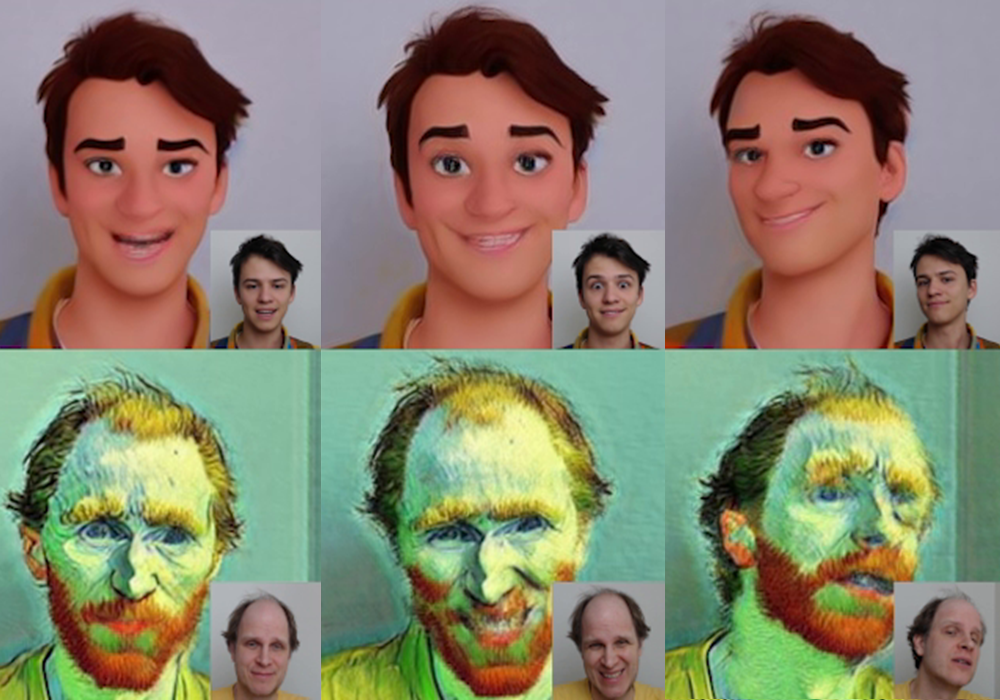
Meet-In-Style: Text-driven Real-time Video Stylization using Diffusion Models
D. Kunz, O. Texler, D. Mould, and D. Sýkora
IEEE Computer Graphics and Applications, CG&A Workshop at SIGGRAPH Asia 2025

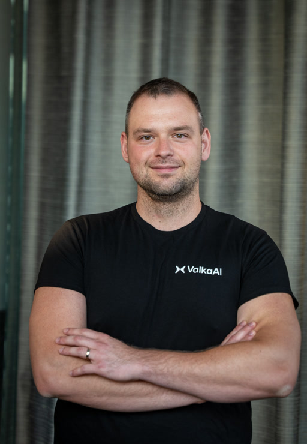
Head of Research Valka.ai
PhD graduate CTU in Prague
"I'd rather be anything but ordinary, please" — Avril Lavigne
As Head of Research at Valka.ai, I have built and now lead a research team of over 20 exceptional scientists and research engineers while collaborating closely with several universities. My work spans a broad range of research areas, ranging from photorealistic rendering of human faces, hands, and bodies via neural rendering techniques including DiT, Flow Matching, Gaussian Splatting, and GANs, to motion modeling of human hands and hand-object interactions, audio synthesis and text-to-speech generation, and world models for understanding and generating very long and complex scenes with multiple interacting virtual avatars.
My entire research career has been revolving around generating realistically looking content given certain conditions, ranging from painterly images, animated stylized videos, to expressive photorealistic avatars with believable and controllable motion. I hold PhD in Computer Graphics, published over 10 papers at top venues such as CVPR or SIGGRAPH, have been cited over 300 times, have GitHub repositories with over 700 stars and 100 forks, co-invented 9 patents, created proof-of-concepts helping to raise multi-million seed round, shipped and released computer vision models and novel rendering pipelines unlocking millions of dollars in ARR, founded and led research teams, peer-reviewed tens of papers, won prizes such as the Best in Show Award at Real-Time Live SIGGRAPH or Joseph Fourier Prize, and gave invited talks and interviews at SIGGRAPH Now, ECCV, or BBC News.
Hierarchical Model-based Generation of Images
O. Texler, D. Dinev, A. Gupta, H.J. Kang, A. Liot, S. Ravichandran, S. Sadi
US Patent US17/967,868, December 2023
Creating Images, Meshes, and Talking Animations from Mouth Shape Data
S. Ravichandran, A. Liot, D. Dinev, O. Texler, H.J. Kang, J. Palan, S. Sadi
US Patent US17/967,872, December 2023
Multimodal Disentanglement for Generating Virtual Human Avatars
S. Ravichandran, D. Dinev, O. Texler, A. Gupta, J. Palan, H.J. Kang, A. Liot, S. Sadi
US Patent US18/296,202, January 2024
End-to-end System for Synthesizing Talking Virtual Human Avatars
D. Dinev, O. Texler, S. Ravichandran, J. Palan, H.J. Kang, A. Gupta, A. Unnikrishnan, A. Liot, S. Sadi
US Patent App. 63/436,058, December 2022
Architecture for Using 1D Inputs in Image-2-Image Translation Networks
H.J. Kang, S. Ravichandran, O. Texler, D. Dinev, A. Liot, S. Sadi
US Patent App. 63/436,211, December 2022
High-fidelity Neural Rendering of Images
D. Dinev, S. Ravichandran, H.J. Kang, O. Texler, A. Liot, S. Sadi
US Patent App. 63/461,199, January 2024
Cache-based Content Distribution Network
A. Liot, A. Unnikrishnan, S. Sadi, S. Banerjee, V. Gokul, J. Palan, H.J. Kang, O. Texler
US Patent App. 63/453,825, January 2024
Lightweight Rendering System with on-device Resolution Improvement
R. Lokesh, S. Banerjee, H.J. Kang, O. Texler, S. Sadi
US Patent App. 63/456,337, January 2024

D. Kunz, O. Texler, D. Mould, and D. Sýkora
IEEE Computer Graphics and Applications, CG&A Workshop at SIGGRAPH Asia 2025
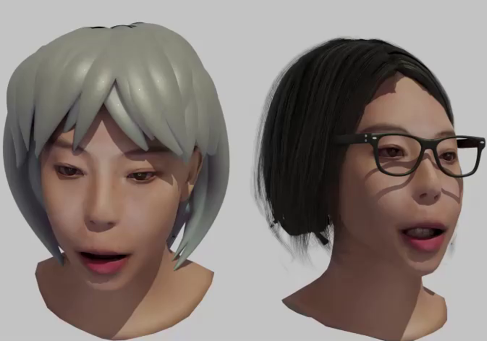
Y. Wang, I. Molodetskikh, O. Texler, and D. Dinev
arXiv pre-print, 2025
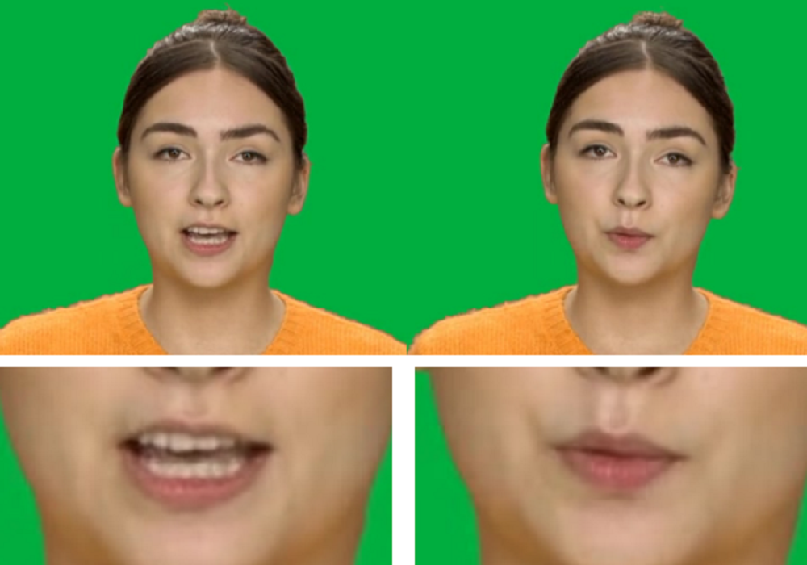
S. Ravichandran, O. Texler, D. Dinev, and HJ. Kang
IEEE/CVF Conference on Computer Vision and Pattern Recognition, CVPR 2023
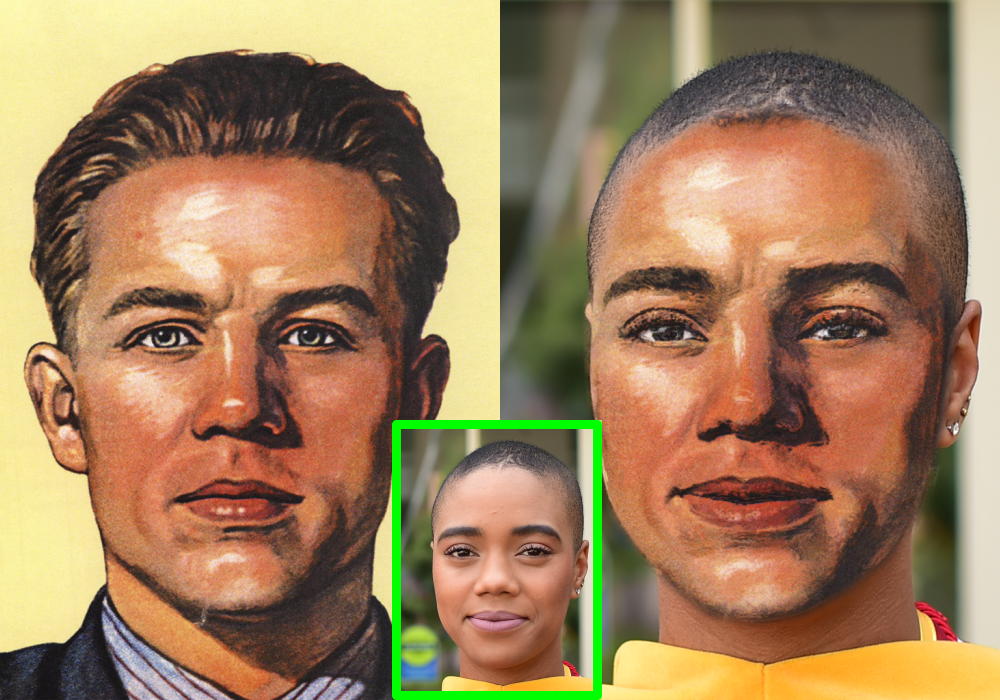
A. Texler, O. Texler, M. Kučera, M. Chai, and D. Sýkora
In Proceedings of the ACM in Computer Graphics and Interactive Techniques, 4(1), 2021 (I3D 2021)
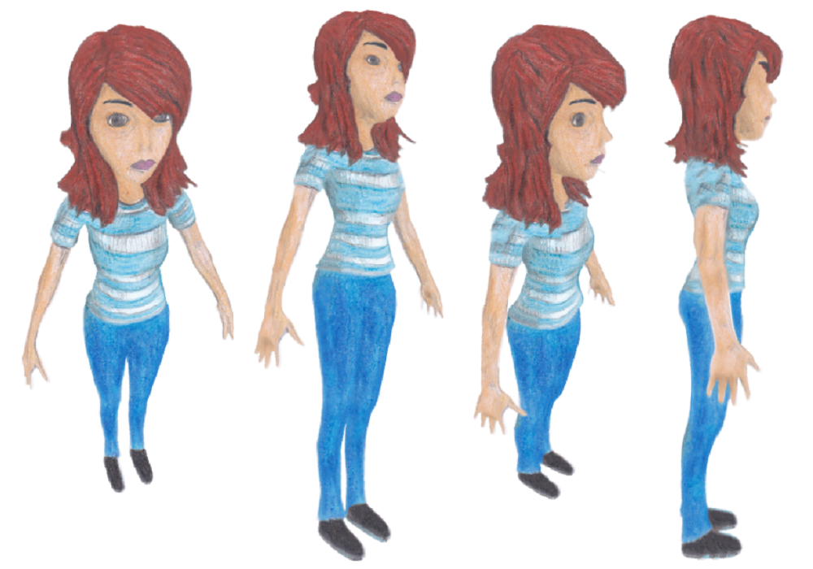
F. Hauptfleisch, O. Texler, A. Texler, J. Křivánek, and D. Sýkora
In Computer Graphics Forum 39(7):575-586 (PacificGraphics 2020)
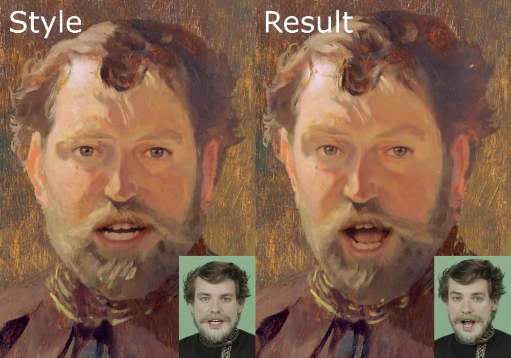
O. Texler, D. Futschik, M. Kučera, O. Jamriška, Š. Sochorová, M. Chai, S. Tulyakov, and D. Sýkora
In ACM Transactions on Graphics 39(4):73 (SIGGRAPH 2020), Best in Show Award at SIGGRAPH Real-Time Live!
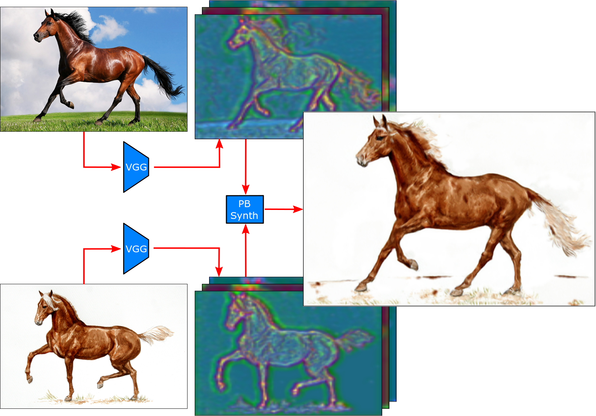
O. Texler, D. Futschik, J. Fišer, M. Lukáč, J. Lu, E. Shechtman, and D. Sýkora
In Computers & Graphics 87:62-71 (January 2020)
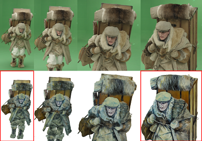
O. Jamriška, Š. Sochorová, O. Texler, M. Lukáč, J. Fišer, J. Lu, E. Shechtman, and D. Sýkora
In ACM Transactions on Graphics 38(4):107 (SIGGRAPH 2019, Los Angeles, California, July 2019)
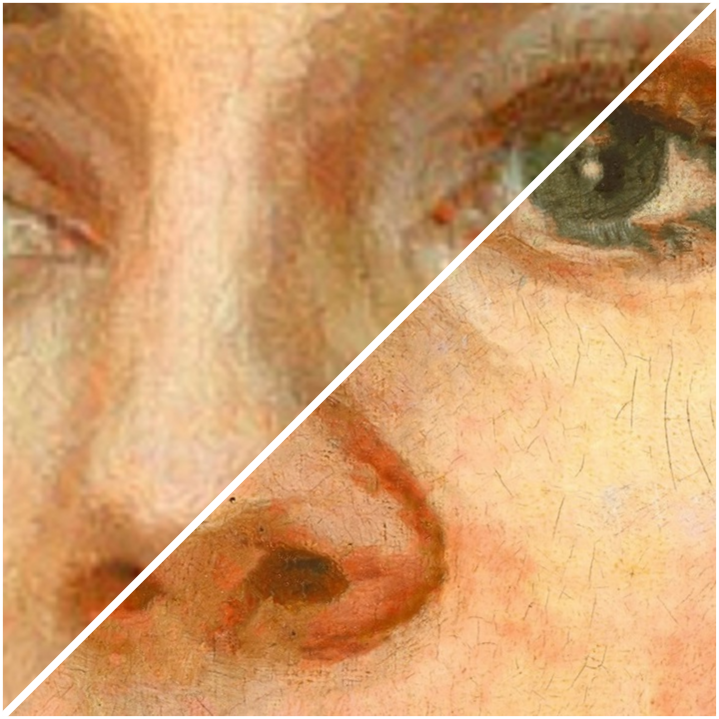
O. Texler, J. Fišer, M. Lukáč, J. Lu, E. Shechtman, and D. Sýkora
In Proceedings of the 8th ACM/EG Expressive Symposium, pp. 43-50 (Expressive 2019, Genoa, Italy, May 2019)
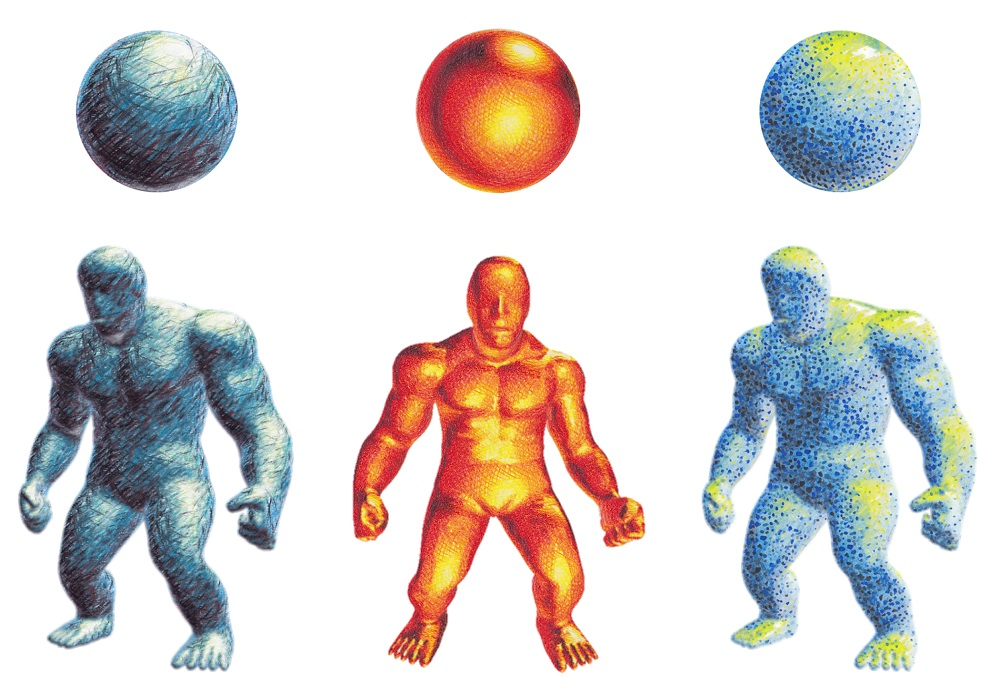
D. Sýkora, O. Jamriška, O. Texler, J. Fišer, M. Lukáč, J. Lu and E. Shechtman
In Computer Graphics Forum 38(2):83-91 (Eurographics 2019, Genoa, Italy, May 2019)
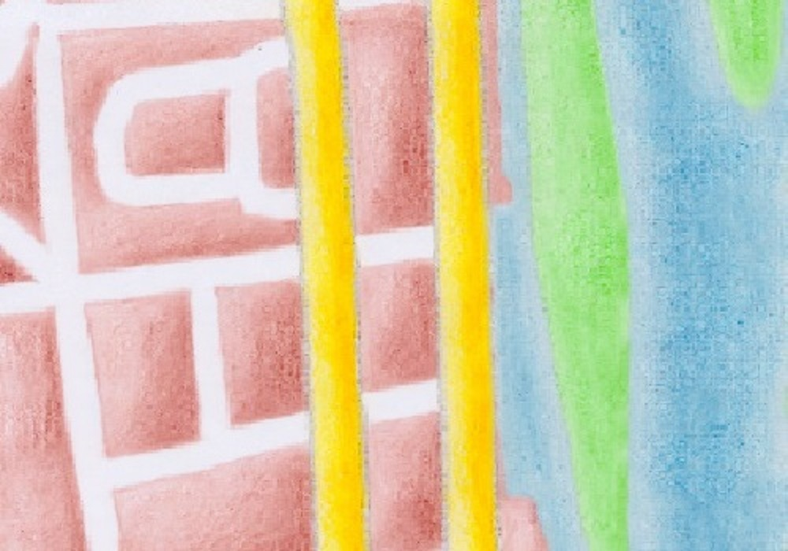
O. Texler and D. Sýkora
In Proceedings of the 22nd Central European Seminar on Computer Graphics. (CESCG 2018, Smolenice, Slovakia, 2018)
Leading a 20+ person research team advancing photorealistic neural rendering, generative speech and audio, human motion modeling and human-object interactions, and world models for long-horizon scene understanding and generation.
Research of core avatar rendering technology. Developed a deferred neural rendering pipeline, shipped several GAN-based models and a novel scheme for rapid training of highly-realistic and expressive avatars, researched transformer-based diffusion models; unlocking multi-million revenue streams.
(Rebranded as comfy.org) Leading the research efforts into developing an end-to-end Generative AI framework that allows for creating stylized videos based on a text prompt; in particular, text-to-video synthesis, example-based video style transfer, and propagating edits through the video sequence. Helping to raise a multi-million seed investment round.
Research and implementation of computer vision and deep learning techniques to render photorealistic virtual humans, focusing on faces. Involved conditional GANs, image-to-image translation networks, deferred neural rendering. Part of the NEON team.
Research and implementation of various image-to-image and video-to-video translation neural networks for face manipulation, e.g., adding makeup, changing skin tone, adding or removing scars or wrinkles. Part of the NEON team.
Research of new techniques on training generative adversarial networks for style transfer tasks; focused on a scenario where a minimal amount of data is available, and an interactive response is required. Furthermore, developing a shader-based real-time stylization for human portraits.
Remote collaboration on several research projects, publications, and tech transfer project. Computer graphics; patch-based style transfer; neural-network-based style transfer.
Combining neural-network-based and patch-based style transfer methods. Chunk-based style transfer method with focus on a real-time performance.
Guiding patch-based style transfer method using convolutional neural networks, image harmonization, and histogram optimization. Integrating developed style transfer method into Adobe Photoshop.
Software and Algorithm Engineer. Developing map-navigation app for smartphones. C++, Java (Android), JavaEE, Objective-C (iOS), C#.
Software and Algorithm Engineer. The World of Warcraft game server. Extending game mechanics, scripting artificial intelligence, data-mining. C++, C#.
Computer Graphics,
FEE, CTU in Prague.
Computer Science,
FIT, CTU in Prague.
Computer Science,
FIT, CTU in Prague.
Mathematics, Physics, and Descriptive Geometry, Gymnasium of Christian Doppler.